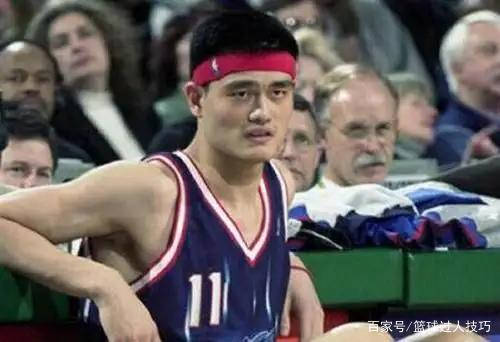

基德职业生涯一直以光头形象示人球迷们早就习惯了他光亮亮的大脑门，但在效力纽约尼克斯期间， 或许是被年轻人的潮流所感染,。戴上发带的基德的颜值变化暂且不说， 但神似中国某电视剧的村副主任，也神似卖羊肉串的大叔。可以说是喜感十足。

姚明和科比应该算是中国球迷最喜欢的两位巨星，毫不夸张地说， 多数中国球迷的青春里就是这两人。在印象里，这两位巨星都不爱戴发带， 不过在职业生涯早期，他们却都曾在比赛中戴过发带。戴上发带的姚明显然比之前的他憨了不少